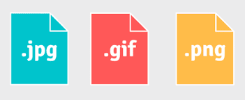

FORMATO DE IMAGEN PARA PÁGINA WEB

DEFINICIÓN DE LOS FORMATOS
JPEG
- JPEG es la sigla correspondiente a Joint Photographic Experts Group, un comité de especialistas que ideó un estándar de codificación y compresión de imágenes digitales. JPEG también es la denominación del formato que identifica a este tipo de documentos y la extensión de los archivos en cuestión.
PNG
- PNG es Portable Network Graphics, un formato de imagen universal reconocido por el World Wide Web Consortium (W3C) que apareció por primera vez en la red en 1996.
GIF
- El portal online CompuServe creó el Graphics Interchange Format, GIF, en 1987 como alternativa de color al por aquel entonces formato de blanco y negro X BitMap (XBM).
LAS VENTAJAS Y LAS DESVENTAJAS
| Formato |
Ventajas |
Desventajas |
| JPEG |
Formato comprimido.
Puede ser comprimido hasta 100 veces.
Mantiene una buena calidad tras la compresión.
Posee una amplia gama de colores.
Ideal para mostrar fotografías en la web dado que no suele ocupar mucho espacio.
|
A pesar que mantiene la calidad, cuenta con pérdidas.
No soporta animaciones ni fondos transparentes.
No es un formato multi-página.
Genera pixelación aún configurándola con la mayor calidad.
No es adecuado para ilustraciones, dibujos, ni textos.
|
| PNG |
Formato comprimido.
Sin pérdidas.
Soporta millones de colores.
Soporta fondos transparentes y semitransparentes.
Ideal para el desarrollo de logotipos, botones y otro tipo de imágenes que necesiten conservar una buena resolución.
|
No soporta animaciones.
No es un formato multi-página.
Imágenes con muchos elementos y colores pueden pesar mucho más que su equivalente en jpg.
No admite modo CMYK.
Incompatibilidad con navegadores antiguos. |
| GIF |
Sin pérdidas.
Tamaño reducido.
Soporta animaciones y fondos transparentes.
Ayuda a construir una imagen moderna en los negocios.
Muy usado para imágenes pequeñas. |
Baja calidad respecto a otros formatos.
Limitada profundidad de color (8 bits).
No es un formato multi-página.
|
LAS DIFERENCIAS
|
JPEG |
PNG |
GIF |
| Esquemas de color |
RGB, escala de grises, CMYK |
RGB, escala de grises, colores indexados |
Colores indexados |
| Número de colores |
Hasta 16,7 mill. |
Hasta 18 trillones |
Hasta 256 |
| Canales de color |
Tres |
Tres (más un canal alfa) |
Uno |
| Profundidad de bits |
8 bits por canal |
1–16 bits por canal |
1–8 bits |
| Compresión |
Alta, con pérdidas |
Alta, sin pérdidas |
Escasa |
| Tamaño de los archivos |
Muy pequeño |
Pequeño |
Grande |
| Animaciones |
No |
No |
Si |
| Adecuado para |
Fotos |
Imágenes y gráficos de pequeña envergadura (p. ej., logotipos), fotos sin pérdidas |
Animaciones |